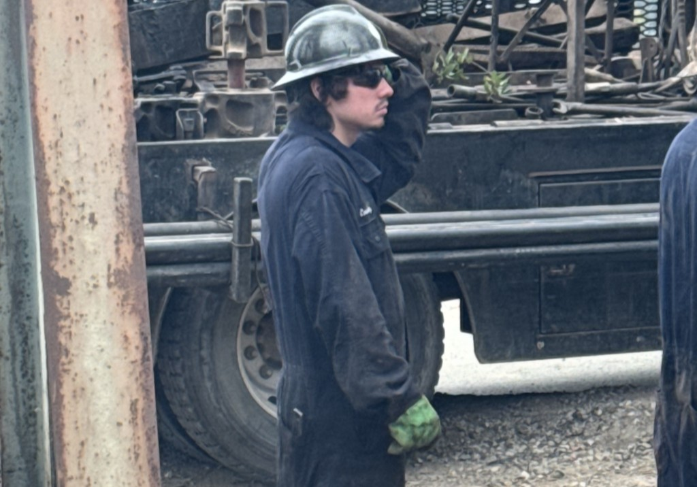

Oil Crew Service Inc.
Oil Crew Service Inc.

01 / Production Support
Production support built for daily field demands.
We provide field assistance that helps customers stay ahead of downtime, solve issues, and manage day-to-day operational demands.
- Daily well support coordination
- Production-side field assistance
- Responsive support for active operations